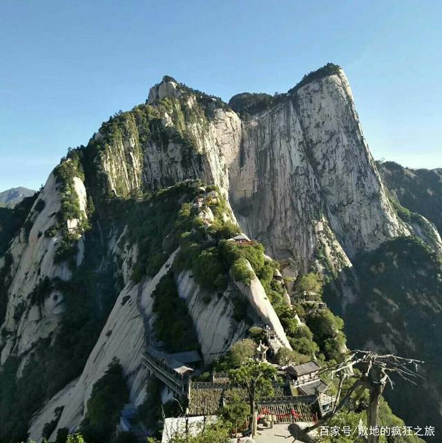

华山，古称“西岳”，雅称“太华山”，为五岳之一，位于陕西省渭南市华阴市，在省会西安以东120千米处。南接秦岭，北瞰黄渭，自古以来就有“奇险天下第一山”的说法。 [1-3]
中华之“华”源于华山，由此，华山有了“华夏之根”之称 [3-4] 。华山是道教主流全真派圣地，为“第四洞天”，也是中国民间广泛崇奉的神祇，即西岳华山君神。共有72个半悬空洞，道观20余座，其中玉泉院、都龙庙、东道院、镇岳宫被列为全国重点道教宫观，有陈抟、郝大通、贺元希等著名的道教高人。
1982年，华山被国务院颁布为首批国家级风景名胜区。2004年，华山被评为中华十大名山。 2011年，华山被国家旅游局评为国家AAAAA级旅游景区。 [5-6]